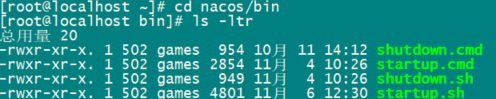
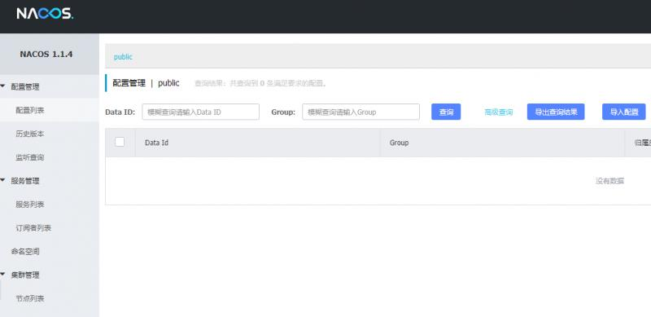
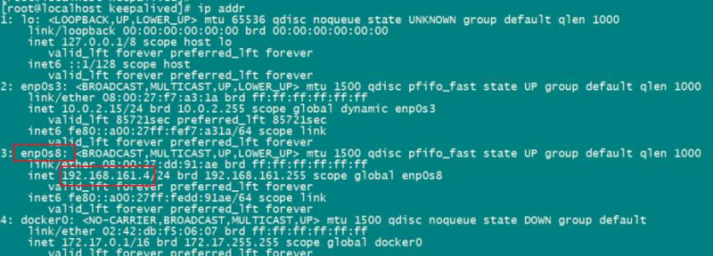
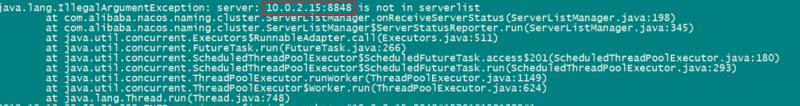
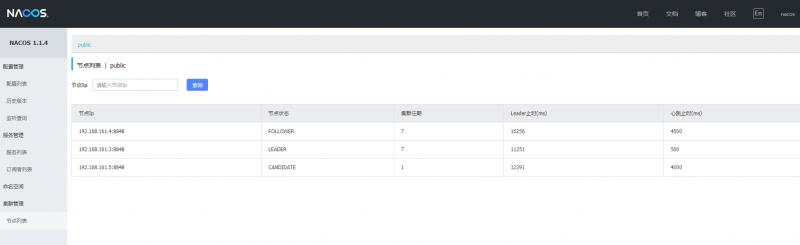
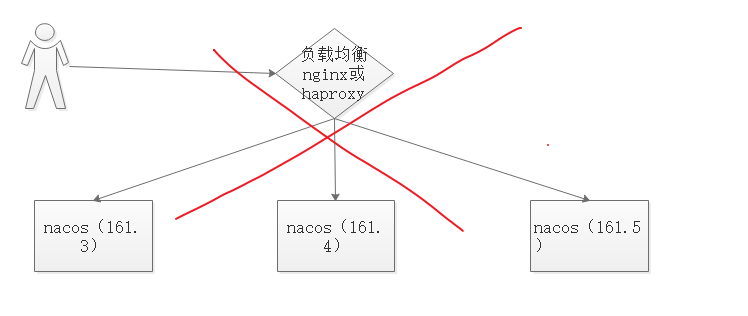

原文连接:https://www.cnblogs.com/zimug/p/12034550.html
一、Nacos简介
Nacos是用于微服务管理的平台，其核心功能是服务注册与发现、服务配置管理。
- Nacos作为服务注册发现组件，可以替换Spring Cloud应用中传统的服务注册于发现组件，如：Eureka、consul等，支持服务的健康检查。
- Nacos作为服务配置中心，可以替换Spring Cloud Config。
当然Nacos作为一个微服务管理平台，除了面向spring Cloud,还支持很多其他的微服务基础设施，如：docker、dubbo、kubernetes等。除了核心的服务注册与发现和配置管理功能，还提供了各种服务管理的功能特性，如：动态DNS、服务元数据管理等。
二、Nacos单点部署
Nacos支持单点部署的模式，搭建过程非常简单，实际上nacos的standalone模式没有所谓的安装过程，就是下载和启动。但是这种情况没有高可用支持，所以只适合测试或学习使用。
首先去nacos的github地址下载release安装包。当然你也可以自己下载源码之后进行编译打包，nacos是使用java开发的，使用maven进行编译打包。这里我们就不自己打包了，使用release安装包。下载地址是：https://github.com/alibaba/nacos/releases。在linux系统下可以使用如下的命令下载和解压缩。
#下载nacos
wget https://github.com/alibaba/nacos/releases/download/1.1.4/nacos-server-1.1.4.tar.gz；
# 解压nacos
tar -xvf nacos-server-1.1.4.tar.gz进入到nacos/bin目录下面，startup命令用于启动nacos，shutdown命令用于停掉nacos。

- 如果你是linux/unix系统，使用
sh startup.sh -m standalone脚本启动方式。 - 如果你是windows系统，双击startup.cmd启动nacos。
nacos的默认服务端口是8848，启动完成之后通过浏览器访问nacos：http://ip:8848/nacos/。看到如下界面，需要登陆，默认的用户名密码都是nacos，登陆之后看到如下界面：

如果你访问不到上面的界面，请检查你部署的主机操作系统的防火墙设置。以下是为CentOS7系统防火墙开放8848端口的命令，其他系统请自行解决。
firewall-cmd --zone=public --add-port=8848/tcp --permanent
firewall-cmd --reload三、查看主机网卡名称
使用ip addr命令查看linux主机的网卡。

- 第一个lo网络ip是回路ip，127.0.0.1,这个是标配
- 第二个enp0s3网络设备，ip是10.0.2.15,这个是因为我的服务器网络使用了双网卡：桥接+HostOnly模式。正常的服务器是没有的。
- 第三个enp0s8就是本服务器真正的使用到提供服务的网络ip，如：192.168.161.4。
- 第四个网络设备是因为我在这台虚拟机上安装过docker，所以有一个docker0的网络设备。
因为较多的网络设备，导致我在后续安装过程出现问题。这里先卖个关子。
四、配置nacos集群
我们准备了三台服务器(虚拟机)，192.168.161.3、192.168.161.4、192.168.161.5。在三台服务器上分别下载、解压nacos，并开放8848端口。参考单点standalone部署的模式的操作。然后在conf/cluster.conf中加入三台服务器的ip配置
#ip:port
192.168.161.3:8848
192.168.161.4:8848
192.168.161.5:8848- 初始化 MySQL 数据库，sql源文件是在nacos/conf解压目录下面的nacos-mysql.sql文件。sql语句源文件。并在nacos/conf/application.properties中增加mysql配置
spring.datasource.platform=mysql
db.num=1
db.url.0=jdbc:mysql://192.168.161.3:3306/testdb?characterEncoding=utf8&connectTimeout=1000&socketTimeout=3000&autoReconnect=true
db.user=test
db.password=- spring.datasource.platform说明支持数据持久化的数据库类型，已知目前只支持mysql
- db.num数据库的数量，我们实验环境只有一个mysql数据库，所以是1
- db.url.0表示第一个mysql数据库的jdbc url连接。如果还有第二个、第三个，请增加db.url.n中的n。
问题： 解决网卡获取的不是我们希望绑定的网卡的问题：当我们配置完成之后，使用startup.sh命令启动。发现集群节点列表中并没有任何记录。而且后台服务日志报错，内容如下：

分析： 通过日志我们看到nacos程序自动获取的是10.0.2.15这个ip，而我们配置的是192.168.161.x的ip。二者不一致，所以报错。我们看一下获取主机ip的程序源码，如下：
private static String getHostAddress() {
String address = System.getProperty("nacos.server.ip");
if (StringUtils.isNotEmpty(address)) {
return address;
} else {
address = "127.0.0.1";
}
...
}解决方案： 看完源码之后，ip是通过System.getProperty获取的，所以我们完全可以通过JVM传参指定ip。在startup.sh的启动脚本中增加nacos.server.ip参数。
#=================================================================================
# JVM Configuration
#================================================================================
# 单机模式对应的启动参数
if [[ "${MODE}" == "standalone" ]]; then
JAVA_OPT="${JAVA_OPT} -Xms512m -Xmx512m -Xmn256m"
JAVA_OPT="${JAVA_OPT} -Dnacos.standalone=true"
else
# 集群模式对应的启动参数
JAVA_OPT="${JAVA_OPT} -server -Xms2g -Xmx2g -Xmn1g -XX:MetaspaceSize=128m -XX:MaxMetaspaceSize=320m"
JAVA_OPT="${JAVA_OPT} -XX:-OmitStackTraceInFastThrow -XX:+HeapDumpOnOutOfMemoryError -XX:HeapDumpPath=${BASE_DIR}/logs/java_heapdump.hprof"
JAVA_OPT="${JAVA_OPT} -XX:-UseLargePages"
# 新增以下参数设置本机ip地址
JAVA_OPT="${JAVA_OPT} -Dnacos.server.ip=你的服务器的ip"
fi当以上工作都完成之后，我们通过浏览器分别访问nacos服务，看到如下界面。集群管理的节点列表里面已经有三各节点，ip分别是192.168.161.3:8848、192.168.161.4:8848、192.168.161.5:8848。

五、nacos集群架构
在完成nacos集群的配置之后，我们可以通过三个入口分别访问集群内的nacos服务，那下面的问题就是如何将三个入口转成一个入口。目前许多个人开发者写的博客或教程中的方法就是在三个nacos服务的前端加一个负载均衡器，如：nginx、haproxy。然后号称是生产级别的搭建方法，但这种方法是绝对不能用于生产的，因为你的nginx和haproxy是单点，一旦nginx挂了，整个服务就挂了。

nacos官网推荐的方法是使用虚拟ip的方法，如下：

- 最开始虚拟ip192.168.161.6可能与192.168.161.3的主机绑定在一起，通过这两个ip都可以访问192.168.161.3主机的nacos服务。
- 一旦192.168.161.3主机宕机或者其他网络故障，192.168.161.6会自动切换到与192.168.161.4或者192.168.161.5主机绑定在一起。这个过程被叫做虚拟ip的漂移。
这种虚拟ip的方法就是没有使用到负载均衡，访问的仍然是某一个节点的nacos服务，只不过形成了主从备份，提供了高可用。那既可以提供高可用，又可以提供负载均衡的办法可能有的朋友已经想到了，如下图：

- 在nacos服务的前端加上nginx或者haproxy的负载均衡器
- 然后对负载均衡器使用虚拟ip，通过keepalived实现虚拟ip的漂移
- 用户访问负载均衡器实现对nacos服务的访问，主nginx挂掉，虚拟ip漂移到从nginx负载均衡提供服务
六、nacos集群(虚拟ip漂移)
我们就拿官网中推荐的方法，使用虚拟ip访问nacos集群的方式做个例子讲解一下。为什么不讲第三种？一般系统架构水平到了的人听懂这种方式就知道第三种方式怎么做，水平不到的人听了第三种仍然还是不懂。
6.1.安装配置keepalived
在三台服务器上分别安装keepalived
yum install -y keepalived在三台服务器上分别修改/etc/keepalived/keepalived.conf
vrrp_instance VI_1 {
state MASTER
interface enp0s8
virtual_router_id 51
priority 100
advert_int 1
authentication {
auth_type PASS
auth_pass 123456
}
virtual_ipaddress {
192.168.161.6
}
}- 一台服务器是MASTER,其他的服务器为BACKUP
- interface 配置为我们刚刚查看的网卡的名称
- virtual_router_id 必须一致，表示这三台服务器抢用一个虚拟ip。
- 修改priority 优先级，三台服务器要不一样，比如：100、101、102，优先级最高的优先使用虚拟ip。MASTER的优先级一定要高于BACKUP主机
- advert_int 是几台服务器之间的同步检查时间，1秒
- authentication 的设置必须一致，这样这几台服务器才能通信
- 修改virtual_ipaddress为三台服务器所在网段内未被占用的IP地址，比如：192.168.161.6
6.2.修改防火墙
CentOS7必须开放防火墙配置，否则三台主机无法就虚拟ip的使用优先级通信，将都是MASTER，都配置虚拟ip。
firewall-cmd --direct --permanent --add-rule ipv4 filter INPUT 0 --protocol vrrp -j ACCEPT;
firewall-cmd --reload;6.3.启动keepalived服务
sudo systemctl restart keepalived.service期待您的关注
- 向您推荐博主的系列文档：《手摸手教您学习SpringBoot系列-16章97节》
- 本文转载注明出处（必须带连接，不能只转文字）：字母哥博客。